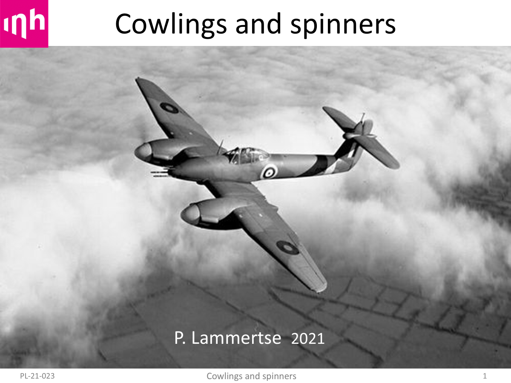

In 2021 I gave an online presentation on cowlings and spinners at InHolland Technical University in Delft.
The intended audience were students posed to help convert a Dragonfly light aircraft to electric propulsion. The lecture can be seen on YouTube, but it is a bit tedious to watch due to an overload of advertisements :
Below are the Powerpoint sheets used in the lecture.
They may be easier to flip through at your own leisure.
This first slide sports a sleek Westland Whirlwind. It shows the incredible level of perfection which cowling design had reached by the end of WW II.

TBW.